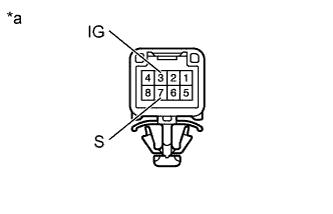

ДАТЧИК ПОЛОЖЕНИЯ ПАРКИНГА / НЕЙТРАЛИ > УСТАНОВКА |
| 1. УСТАНОВИТЕ ДАТЧИК ПОЛОЖЕНИЯ ПАРКИНГА / НЕЙТРАЛИ В СБОРЕ |
Установите датчик на вал клапана с ручным управлением.
Временно вверните болт.
 |
Установите новую стопорную шайбу и гайку.
| *1 | Новая стопорная шайба |
Поверните левый рычаг приводного вала до упора по часовой стрелке, а затем поверните его на 2 прорези против часовой стрелки для установки в положение N.
 |
Совместите канавку с базовой линией нейтрали.
| *1 | Базовая линия нейтрали |
| *2 | Канавка |
Удерживая датчик на месте, затяните болт.
С помощью отвертки загните лепестки стопорной шайбы.
Подсоедините разъем выключателя.
| 2. ПРОВЕРЬТЕ ПОЛОЖЕНИЕ РЫЧАГА ПЕРЕКЛЮЧЕНИЯ ПЕРЕДАЧ |
|  |
Измерьте сопротивление в соответствии со значениями, приведенными в таблице ниже.
| Контакты для подключения диагностического прибора | Состояние | Заданные условия |
| 3 (IG) - 7 (S) | Рычаг переключения передач в положении "+" или "-" режима S | Менее 1 Ом |
| 3 (IG) - 7 (S) | Рычаг переключения передач не в положении "+" или "-" режима S | 10 кОм или более |
| *a | Устройство с неподсоединенным жгутом проводов (датчик положения селектора передач) |
| 3. ПРОВЕРЬТЕ ДАТЧИК ПОЛОЖЕНИЯ ПАРКИНГА/НЕЙТРАЛИ В СБОРЕ |
 |
Измерьте сопротивление в соответствии со значениями, приведенными в таблице ниже.
| Контакты для подключения диагностического прибора | Состояние | Заданные условия |
| Рычаг переключения передач в положении Р | Менее 1 Ом |
| 2 (RB) - 1 (RL) | Рычаг переключения передач в положении R | Менее 1 Ом |
| Рычаг переключения передач в положении N | Менее 1 Ом |
| 2 (RB) - 7 (DL) |
| Менее 1 Ом |
| Рычаг переключения передач не в положении Р | 10 кОм или более |
| 2 (RB) - 1 (RL) | Рычаг переключения передач не в положении R | 10 кОм или более |
| Рычаг переключения передач не в положении N | 10 кОм или более |
| 2 (RB) - 7 (DL) |
| 10 кОм или более |
| *a | Устройство с неподсоединенным жгутом проводов (датчик положения паркинга/нейтрали) |